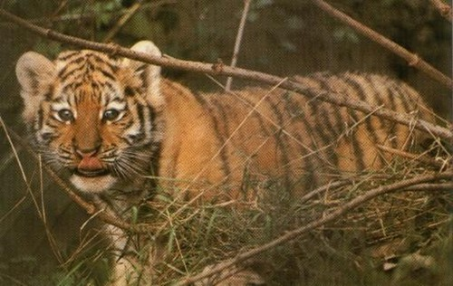

- HOME
- General
- Subdivision
- Looks
- Behaviour
- Senses
- Subspecies:
- Siberian tiger
- Bengal tiger
- Sumatran tiger
- Indochinese tiger
- South China tiger
- Caspian tiger
- Java tiger
- Bali tiger
- Hybrids:
- Liger
- Tigon
- Historisch:
- Saber tooth tiger
- Links


Relevant links:
-
Currently there are no relevant links available.
The reproduction and
raising the cubs
1. The reproduction
2. Raising the cubs
1. The reproduction
Tigers mate during the whole year, although there is a fertility peak at October-November and March-May.
The mating ritual of tigers differs strongly from ours: when the female is on heat, she leaves aromatic substances and other signs on the frontiers of her territory. She also uses sounds of a low registry.
The males answer these sounds, but their noise is louder and shorter. When males notice the signs, they will enter the territory of the female. When no male responds to her signs, the female will leave her territory and she will search for a male herself.
Because the territories of males and females overlap (the territory of males often overlaps with several territories of females), the female will most probably mate with the ruling male, until the male gets chased off by another one. Mating the ruling male has the advantage that he will protect the cubs by defending them against other males passing by.


When a male and female tiger have found each other, they meet each other several times a day to copulate. They often use the night to go hunting. When a second male arrives, both males will try to scare off each other and if that does not work, they will fight. The strongest one wins and will stay to copulate. Tigers are never homosexual, in contrary with e.g. antelopes.
Raising the cubs
When a female is no longer on heat, both tigers go back to their own territory. The first 2.5 weeks there is absolutely no sign of her being pregnant. Only the last 10 days of the pregnancy the belly gets clearly visible (after all, she has to care for her own food the whole time therefore the belly would be very annoying).
After 103 days of pregnancy, most likely 2 or 3 cubs will be born (averagely 2,9 cubs with orange tigers and 2,75 cubs with white tigers). They are born in a well hidden clutch for example a rock leaning over, a cave or a deserted building. The cubs get born with an interval of 10 to 20 minutes. The whole delivery only takes about one hour. The mother restores a bit of her energy by eating the amniotic sac, the placenta and the umbilical cord. The next day she already goes back hunting.
At the first litter, the mother usually ignores the cubs; she is too inexperienced and doesn't know very well how to raise them. The second litter will go a lot better. From the third litter she is an expert nanny. 18 to 20 months after the delivery, the mother gets back on heat again. Because of stress the heat-period can be delayed.

The cubs' education starts quickly: after 9 to 30 minutes they begin roaring. In the beginning they only drink milk, but after 40 days they eat their first piece of meat and keep drinking a lot of milk. After 90 to 100 days they fully live on meat. They averagely need 1 kilogram of meat a day. Their total apprenticeship takes about 2 years. During this time the mother teaches them the skills of hunting, the cubs play with each other all day in order to learn to fight. These skills are very important for them to survive without their mother.
They regularly change their place to sleep, so that the cubs learn the territory of the mother and are better hidden for others. The greatest danger for the tiger cubs are small predators and other male tigers that are not their father. Male tigers will try to kill the cubs as soon as possible (the mother will try defending them), because without the cubs the mother will be faster rutting so that they can make cubs of their own. Therefore the presence of a ruling male will increase the odds for the cubs dramatically and this prevents a lot of stress for the mother.
As long as the mother has cubs, she is extremely unpredictable and dangerous (because of the necessity to defend her cubs). She will attack every individual coming to close to the litter and kill it if necessary.